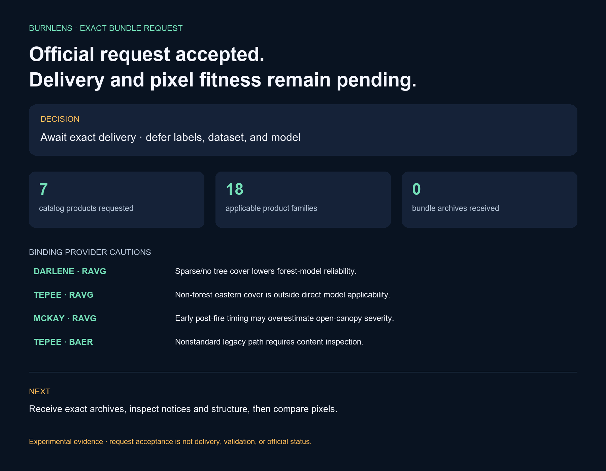

BurnLens · Phase Two · Objective Four
Official bundle request accepted. Delivery remains pending.
Experimental BurnLens CV evidence. Request acceptance is not bundle delivery or scientific fitness. Not official wildfire information or emergency guidance. Official sources govern.

Exact request
Six standard map IDs plus one explicit nonstandard BAER path were submitted through the current official viewer route in local UTM. Recipient and retrieval channel remain private.
Canonical payload SHA-256: 0877b94b5407224061a598915f609937c828b4004fb7bb5c66ae3c4d58f9dfa2
Provider cautions bind later fitness
- TEPEE_RAVG_NON_FOREST_COVER — About the eastern half is non-forest cover, where the forest-calibrated RAVG model is not directly applicable. RAVG cannot independently promote Tepee labels in affected cover.
- MCKAY_RAVG_EARLY_POST_SCENE — The available post-fire scene is earlier than ideal for open canopy, so severity may be overestimated there. RAVG severity requires optical and cross-program corroboration.
- DARLENE_RAVG_SPARSE_TREE_COVER — Sparse or absent pre-fire tree cover makes the forest-calibrated RAVG model less reliable where non-tree reflectance dominates. RAVG cannot independently promote Darlene labels.
- TEPEE_BAER_NONSTANDARD_LEGACY — The BAER record is nonstandard, has no map ID, and carries a minimal legacy note. Use only the explicit viewer-resolved bundle path; inspect contents before use.
Next gate
Receive and hash exact archives, inspect notices and marked non-USGS content, verify identity/structure/CRS/grid/nodata/class domains, and only then compare pixels with optical evidence and reviewer dispositions.
Trace
Run BL-2026-07-17-current-reference-bundle-request-r001; source commit 725522bd31616a258fcf399fea2a4839165e2791; software 0.22.0; dataset/model remain null.